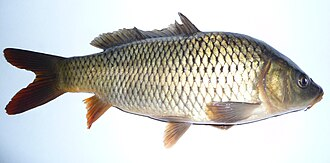

こいの生産量 都道府県ランキング
全17都道府県の順位と収獲量
最終更新：
こいの収獲量が全国で最も多いのは茨城県で、629 tです。全国（1,617 t）の39%を占めます。

| 順位 | 都道府県 | 収獲量 | 全国に占める割合 |
|---|---|---|---|
| 1位 | 茨城県 | 629 t | 39% |
| 2位 | 福島県 | 580 t | 36% |
| 3位 | 福岡県 | 160 t | 9.9% |
| 4位 | 長野県 | 87 t | 5.4% |
| 5位 | 群馬県 | 56 t | 3.5% |
| 6位 | 山形県 | 38 t | 2.4% |
| 7位 | 鹿児島県 | 20 t | 1.2% |
| 8位 | 熊本県 | 15 t | 0.9% |
| 9位 | 富山県 | 11 t | 0.7% |
| 10位 | 宮崎県 | 10 t | 0.6% |
| 11位 | 新潟県 | 4 t | 0.2% |
| 12位 | 岡山県 | 2 t | 0.1% |
| 13位 | 香川県 | 2 t | 0.1% |
| 14位 | 栃木県 | 1 t | 0.1% |
| 15位 | 石川県 | 1 t | 0.1% |
| 16位 | 福井県 | 1 t | 0.1% |
| 17位 | 岐阜県 | 1 t | 0.1% |
PR

こいの生産量の推移（令和2年〜令和6年）
全国の収獲量は、令和2年の2,247 tから令和6年の1,617 tへ、28%減りました。期間中、1位は一貫して茨城県です。
| 年 | 全国 | 1位 | 2位 | 3位 |
|---|---|---|---|---|
| 令和6年 | 1,617 t | 茨城県629 t | 福島県580 t | 福岡県160 t |
| 令和5年 | 1,725 t | 茨城県667 t | 長野県96 t | 群馬県72 t |
| 令和4年 | 2,027 t | 茨城県763 t | 福島県646 t | 宮崎県155 t |
| 令和3年 | 2,064 t | 茨城県749 t | 福島県683 t | 長野県93 t |
| 令和2年 | 2,247 t | 茨城県812 t | 福島県744 t | 長野県104 t |
この数字について
- 分類：鯉の仲間
- 全国の収獲量：1,617 t
- この数字が表すもの：収獲量（養殖による収獲量）
- 調査：内水面漁業生産統計調査（内水面養殖業） 令和6年
- この品目は川や湖の養殖の統計です。
- 17県分を調査（調査していない県は順位に入りません）
このページを引用するとき
出典：生産量.com「こいの生産量 都道府県ランキング」https://seisanryo.com/item/koi（元データ：内水面漁業生産統計調査（内水面養殖業） 令和6年）
リンク・引用は連絡なしで自由に行えます。詳しくは引用・リンクについてをご覧ください。
こいの生産量について、よくある質問
- こいの生産量が日本一の都道府県はどこですか？
- 茨城県です。内水面漁業生産統計調査（内水面養殖業）（令和6年）で629 tでした。
- こいの生産量ランキング2位・3位はどこですか？
- 2位は福島県（580 t）、3位は福岡県（160 t）です。
- こいの生産量ランキング4位・5位はどこですか？
- 4位は長野県（87 t）、5位は群馬県（56 t）です。こいの全17県の順位は上の表のとおりです。
- こいの全国の生産量はどれくらいですか？
- 1,617 t（令和6年）です。
広告